Shiming Chen 陈使明Postdoctoral Research FellowEmail: gchenshiming at gmail dot com |
|

Short Bios
News
- 2024.05, Our TWO papers on zero/few-shot learning is accepted to ACM MM'24, congrating to Shuhuang and Yunwei.
- 2024.05, Our paper on few-shot object detection is accepted to TIP, congrating to Zhimeng.
- 2024.02, Our TWO paper on zero-shot learning are accepted to CVPR'24.
- 2024.02, Our SURVEY on few-shot object detection is accepted to Information Fusion, congrating to Zhimeng.
- 2024.01, Our paper on Non-Transferable Representation Learning is accepted to ICLR'24 (Spotlight), congrating to Ziming.
- 2023.12, Our paper on zero-shot learning is accepted to Science China Information Sciences, congrating to Shuhuang.
- 2023.11, I give a talk in Harbin Institute of Technology (Shenzhen), invited by Prof. Haijun Zhang.
- 2023.10, I organize a VALSE Webinar on "Zero-shot Learning in Vision". Thanks for the exciting sharing of Prof. Jingjing Li, Prof. Kaiyang Zhou, Dr. Yongqin Xian, and Prof. Zhong Ji.
- 2023.09, I give a talk in ZHEJIANG LAB, invited by Dr. Jin Zhao.
- 2023.08, one paper on zero-shot learning is accepted to TEC.
- 2023.07, Our paper on rainy image generation is accepted to ICCV'23.
- 2023.07, I am invited as an Area Chair (AC) of PRCV'23.
- 2023.06, I give a talk in University of Science and Technology of China, invited by Prof. Hongtao Xie.
- 2023.04, Our paper on zero-shot learning is accepted to ICML'23.
- 2023.04, I give a talk in Alibaba DAMO Academic, invited by Baigui Sun.
- 2023.04, I give a talk in Huazhong Agricultural Univeristy, invited by Prof. Hong Chen.
- 2023.04, I give a talk in Guizhou University, invited by Prof. Yisong Wang.
- 2023.03, I am invited as an Area Chair (AC) of VALSE, news at Here.
- 2023.03, I give a talk in National Key Laboratory of Science and Technology on Multispectral Information Processing, invited by Prof. Yi Chang.
- 2022.12, Our TransZero++ is accepted to TPAMI.
- 2022.08, I was invited as a Program Committee (PC) Member for AAAI'23.
- 2022.05, I give a talk about our CVPR'22 work (MSDN) in VALSE.
- 2022.05, I give a talk about zero-shot learning in AI TIME and AI Drive.
- 2022.04, Our paper on zero-shot learning is accepted to IJCAI'22.
- 2022.04, We have released the full codes of TransZero accepted to AAAI'22.
- 2022.03, Our paper on zero-shot learning is accepted to CVPR'22.
- 2022.02, I gave a talk in Extreme Mart (极市).
- 2022.02, Our paper on zero-shot learning is accepted to TNNLS.
- 2022.02, I gave a talk in AI TIME PhD-NeurIPS, invite by AI TIME.
- 2022.01, I start a Research Intern at Tencent AI Lab.
- 2021.12, Our paper on zero-shot learning is accepted to AAAI'22.
- 2021.09, Our paper on zero-shot learning is accepted to NeurIPS'21.
- 2021.07, Our paper on zero-shot learning is accepted to ICCV'21.
Researches
Dr. Shiming Chen has been focusing on tackling bottleneck challenges to promote ZSL (especially for the classical ZSL), covering fundamental questions of How to enhance the visual features by alleviating the cross-dataset bias between ImageNet and ZSL benchmarks? How to discover the intrinsic semantic knowledge by alleviating the visual-semantic domain shift problem? How to align the visual and semantic features in a common space by reducing the discrepancy between the heterogeneous visual-semantic representations? Specifically, his three representatives research projects are:
1. Developing the visual feature enhancement algorithms to tackle the challenge of cross-dataset bias in ZSL. As for the embedding-based ZSL, a graph-guided dual attention network is introduced to fuse the local visual features and explicit global visual features to enhance visual features. As for the generative ZSL, several feature refinement learning methods are proposed to enhance the visual features and encourage the generator to synthesize realistic visual features for unseen classes. The papers of this project have been published in ICCV'21, IJCAI'22, IEEE TNNLS'22, etc.
2. Developing the effective ZSL algorithms to tackle the visual-semantic domain shift problem. As for the embedding-based ZSL, a attribute-guided Transformer network and mutually semantic distillation network are proposed to learn the intrinsic semantic knowledge, enriching the visual features with semantic information to enable desirable semantic knowledge transfer from seen calsses to unseen ones. As for the generative ZSL, dynamic semantic prototype learning is proposed to refine the pre-defined semantic prototypes under the guidance of visual signal, aligning the empirical and actual semantic prototypes for synthesizing accurate visual features. The papers of this project have been published in CVPR'22, AAAI'22, IEEE TPAMI'22, IEEE TEC'23, ICML'23 , CVPR'24 , etc.
3. Developing the hierarchical semantic-visual adaptation framework for visual-semantic alignment. Different to existing one-step adaptation method that on alignment the feature distributions between visual and semantic domains, this method utilizes a hierarchical adaptation to learn an intrinsic common space for semantic and visual feature representations by adopting sequential structure adaptation and distribution adaptation. The papers of this project have been published in NeurIPS'21, CVPR'24 .
Latest Publications (Google Scholar)
| 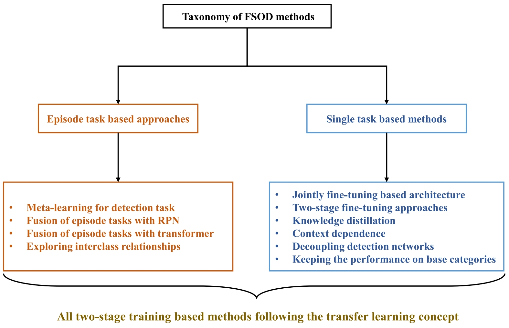 | Few-shot object detection: Research advances and challenges.
[PDF]
[arXiv]
Zhimeng Xin, Shiming Chen, Tianxu Wu, Yuanjie Shao, Weiping Ding, Xinge You. Information Fusion, 2024. (SCI, IF=18.6) |
| 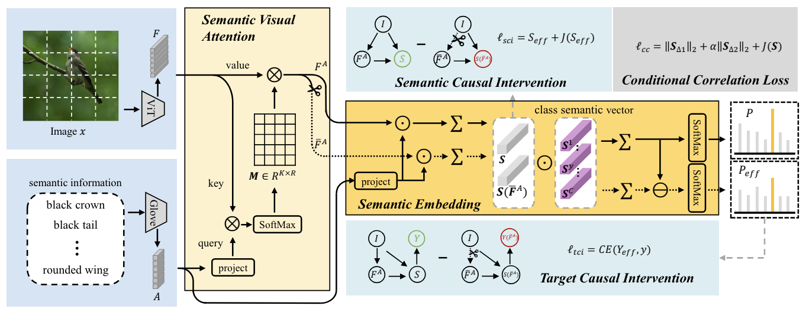 | Causal Visual-semantic Correlation for Zero-shot Learning.
Shuhuang Chen, Dingjie Fu, Shiming Chen, Shuo Ye, Wenjin Hou, Xinge You. ACM Multimedia ( ACM MM ), 2024. (CCF Rank-A) |
| 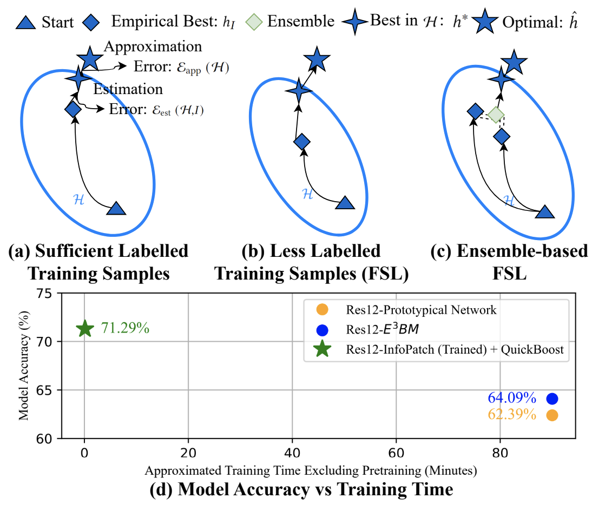 | FSL-QuickBoost: Minimal-Cost Ensemble for Few-Shot Learning.
Yunwei Bai, Bill Cai, Ying Kiat Tan, Zangwei Zheng, Shiming Chen, Tsuhan Chen. ACM Multimedia ( ACM MM ), 2024. (CCF Rank-A) |
| 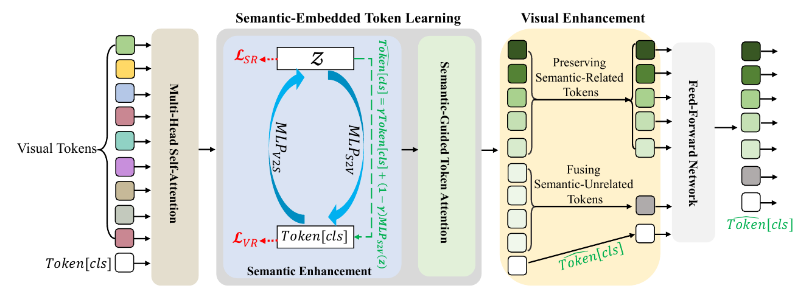 | Progressive Semantic-Guided Vision Transformer for Zero-Shot Learning.
[arXiv]
Shiming Chen, Wenjin Hou, Salman Khan, Fahad Shahbaz Khan. IEEE Conference on Computer Vision and Pattern Recognition ( CVPR ), 2024. (CCF Rank-A) |
| 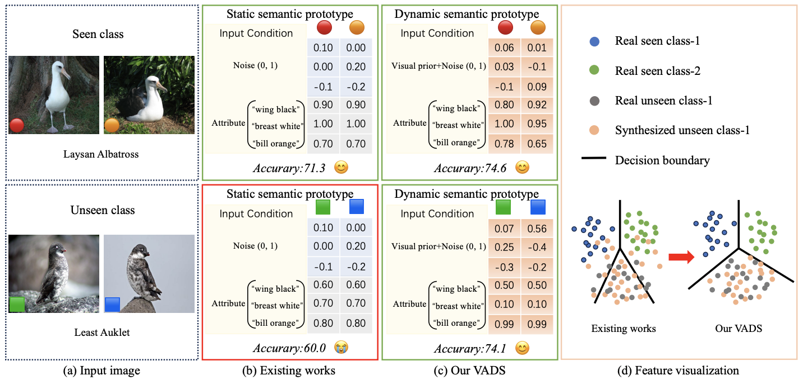 | Visual-Augmented Dynamic Semantic Prototype for Generative Zero-Shot Learning.
[arXiv]
Wenjin Hou, Shiming Chen#, Shuhuang Chen, Ziming Hong, Yan Wang, Xuetao Feng, Salman Khan, Fahad Shahbaz Khan, Xinge You. IEEE Conference on Computer Vision and Pattern Recognition ( CVPR ), 2024. (CCF Rank-A) |
| 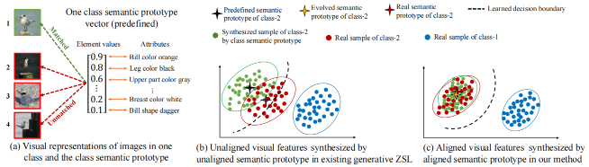 | Evolving Semantic Prototype Improves Generative Zero-Shot Learning.
[PDF]
[arXiv]
Shiming Chen, Wenjin Hou, Ziming Hong, Xiaohan Ding, Yibing Song, Xinge You, Tongliang Liu, Kun Zhang. The Fortieth International Conference on Machine Learning ( ICML ), 2023. (CCF Rank-A) |
| 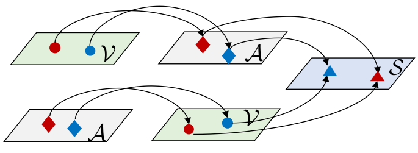 | MSDN: Mutually Semantic Distillation Network for Zero-Shot Learning.
[PDF]
[arXiv]
[Code] Shiming Chen, Ziming Hong, Guo-Sen Xie, Wenhan Yang, Qinmu Peng, Kai Wang, Jian Zhao, Xinge You. IEEE Conference on Computer Vision and Pattern Recognition ( CVPR ), 2022: 7612-7621. (CCF Rank-A) |

|
HSVA: Hierarchical Semantic-Visual Adaptation for Zero-Shot Learning.
[PDF]
[arXiv]
[Code] Shiming Chen, Guo-Sen Xie, Qinmu Peng, Yang Liu, Baigui Sun, Hao Li, Xinge You, Ling Shao. Annual Conference on Neural Information Processing Systems ( NeurIPS ), 2021: 16622-16634. (CCF Rank-A) |
| 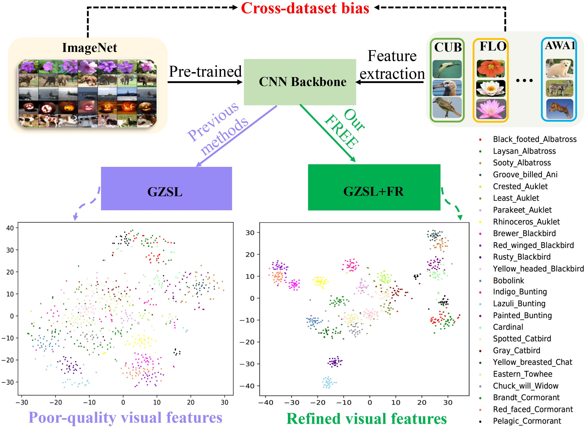 |
FREE: Feature Refinement for Generalized Zero-shot Learning.
[PDF]
[arXiv]
[Code] Shiming Chen, Wenjie Wang, Beihao Xia, Qinmu Peng, Xinge You, Feng Zheng, Ling Shao. IEEE International Conference on Computer Vision ( ICCV ), 2021: 1106-1112. (CCF Rank-A) |
| 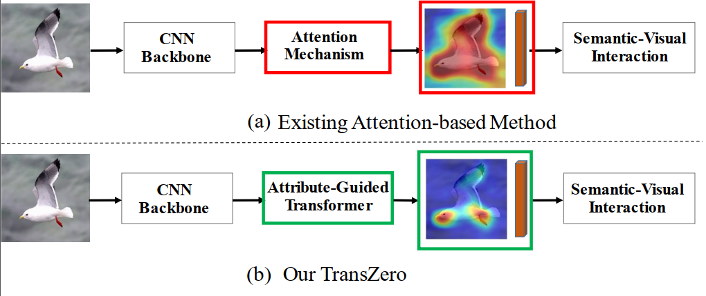 | TransZero: Attribute-guided Transformer for Zero-Shot Learning.
[PDF]
[arXiv]
[Code] Shiming Chen*, Ziming Hong*, Yang Liu, Guo-Sen Xie, Baigui Sun, Hao Li, Qinmu Peng, Ke Lu, Xinge You. Thirty-Sixth AAAI Conference on Artificial Intelligence ( AAAI ), 2022: 330-338. (CCF Rank-A) |
| 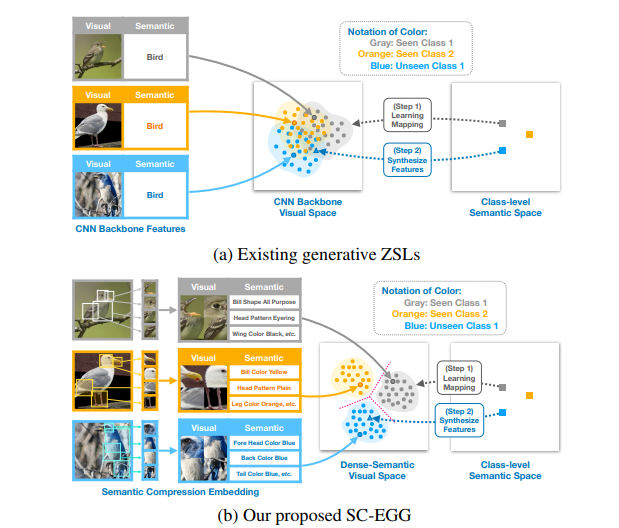 | Semantic Compression Embedding for Generative Zero-Shot Learning. Ziming Hong*, Shiming Chen*#, Guo-Sen Xie, Wenhan Yang, Jian Zhao, Yuanjie Shao, Qinmu Peng, Xinge You The 31th International Joint Conference on Artificial Intelligence ( IJCAI ), 2022: 956-963. (CCF Rank-A) |
| TransZero++: Cross Attribute-guided Transformer for Zero-Shot Learning.
[Project Page]
[arXiv]
[PDF]
Shiming Chen, Ziming Hong, Wenjin Hou, Guo-Sen Xie, Yibing Song, Jian Zhao, Xinge You, Shuicheng Yan, Ling Shao. IEEE Transactions on Pattern Analysis and Machine Intelligence ( TPAMI ), 45(11):12844-12861, 2023. (SCI, IF=24.314, CCF Rank-A) |
|
| 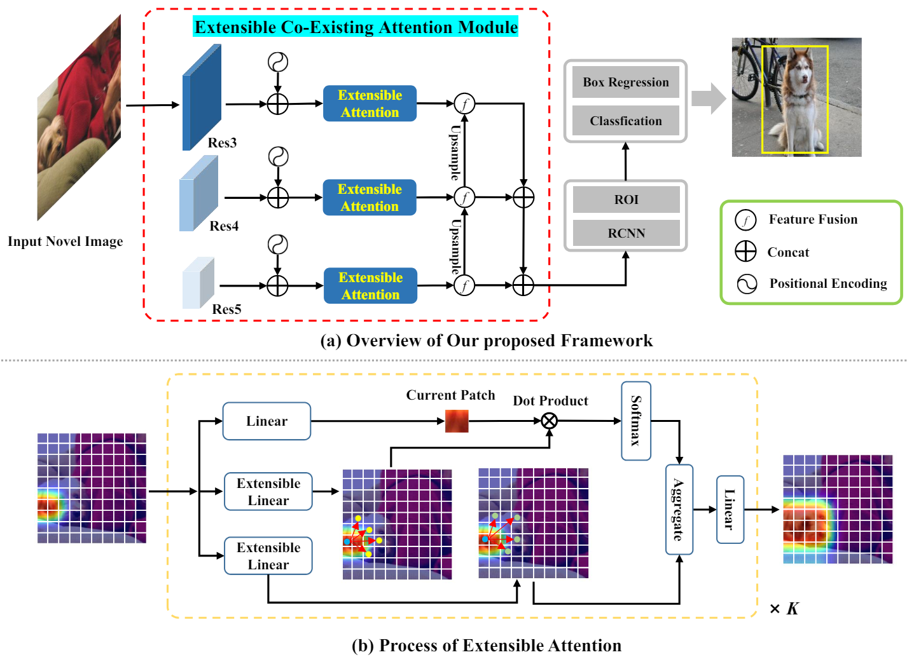 | ECEA: Extensible Co-Existing Attention for Few-Shot Object Detection.
[arXiv]
Zhimeng Xin, Tianxu Wu, Shiming Chen#, Yixiong Zou, Ling Shao, Xinge You. IEEE Transactions on Image Processing ( TIP ), in press, 2024. (SCI, IF=10.6, CCF Rank-A) |
| 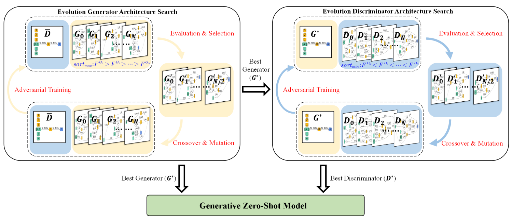 | EGANS: Evolutionary Generative Adversarial Network Search for Zero-Shot Learning.
[PDF]
[arXiv]
Shiming Chen, Shuhuang Chen, Wenjin Hou,Weiping Ding, Xinge You. IEEE Transactions on Evolutionary Computation ( TEC ), in press, 2023. (SCI, IF=14.3, CCF Rank-B) |
| 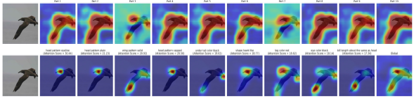 | GNDAN: Graph Navigated Dual Attention Network for Zero-Shot Learning.
[Code]
[PDF] Shiming Chen, Ziming Hong, Guo-Sen Xie, Xinge You, Weiping Ding and Ling Shao. IEEE Transactions on Neural Networks and Learning Systems ( TNNLS), 35(4):4516-4529, 2024. (SCI, IF=14.255, CCF Rank-B) |
| 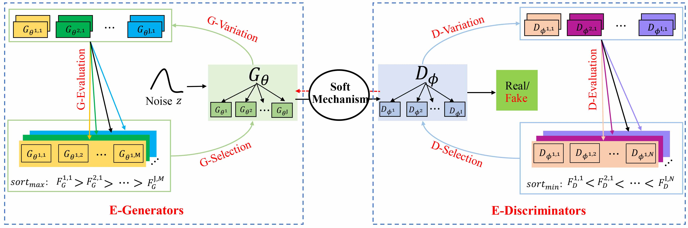 | CDE-GAN: Cooperative Dual Evolution Based Generative Adversarial Network.
[PDF]
[arXiv]
Shiming Chen, Wenjie Wang, Beihao Xia, Xinge You, Qinmu Peng, Zehong Cao, Weiping Ding. IEEE Transactions on Evolutionary Computation ( TEC ), 25:986-1000, 2021. (SCI, IF=14.3, CCF Rank-B) |
| 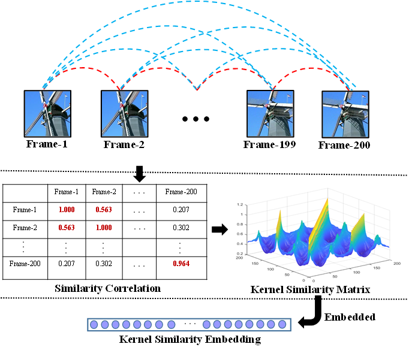 | Kernelized Similarity Learning and Embedding for Dynamic Texture Synthesis.
[Code]
[arXiv]
Shiming Chen, Peng Zhang, Guo-sen Xie, Zehong Cao, Qinmu Peng, Wei Yuan, Xinge You. IEEE Transactions on Systems, Man and Cybernetics: Systems ( TSMCA), 53(2):824-837, 2023. (SCI, IF=11.471) |
Awards
Work Experience
-
Trustworthy Machine Learning Lab (TML Lab), Uinversity of Sydney, Working with Prof. Tongliang LiuApril. 2022 – Dec. 2022
Visiting Student
Topic: Zero-shot Learning, Noisy Label
-
Tencent, AI Lab.Jan. 2022 – Dec. 2022
Research Intern
Topic: Zero-shot Learning, Visual-and-Language System
-
Alibaba DAMO Academy, Machine Intelligence, Vision Lab. Hosted by Rong JinMay. 2021 – Oct. 2021
Research Intern
Topic: Zero-shot Learning, Domain Adaptation, Transformer
-
Fortsense, In-Screen Fingerprint Group.Apr. 2020 – Sep. 2020
Research Intern
Topic: Image Retrieval, Signal Verification
Professional Services
Journal Reviewers: TPAMI, IJCV, TIP, TNNLS, TEC, TCYB, TSMCA, TITS, TII, TMM, TASE, TIV, etc.
Conference PC/Reviewers: ICLR'23-24, NeurIPS'23, CVPR'22-24, ICCV'21-23, ECCV'22-24, AAAI'22-24, IJCAI'21-23, ACM MM'21.
Invited Talks
-
School of Information Science and Technology, University of Science and Technology of ChinaJun. 2023
Title: Zero-Shot Learning in Vision
-
Alibaba DAMO AcademicApr. 2023
Title: Semantic-Guided Zero-Shot Learning
-
Department of Mathematics and Statistics, Huazhong Agricultural UniveristyApr. 2023
Title: Attribute Based Zero-Shot Learning
-
School of Computer Science and Technology, Guizhou UniversityApr. 2023
Title: Semantic-Guided Zero-Shot Learning
-
National Key Laboratory of Science and Technology on Multispectral Information ProcessingMar. 2023
Title: Deep Feature Representations Based Zero-Shot Learning
-
IEEE International Conference on Digital Twins and Parallel IntelligenceNov. 2022
Title: Mutually Semantic Distillation Network for Zero-Shot Learning
-
Huawei (Shanghai)Aug. 2022
Title: Deep Feature Representations Based Zero-Shot Image Classification
-
Zhidongxi (AI New Youth)Aug. 2022
Title: MSDN: Mutually Semantic Distillation Network for Zero-Shot Learning
-
VALSEJun. 2022
Title: Mutually Semantic Distillation Network for Zero-Shot Learning
-
AI DriveJun. 2022
Title: Mutually Semantic Distillation Network for Zero-Shot Learning
-
AI TIMEJun. 2022
Title: Attribute-guided Transformer for Zero-Shot Learning
-
Extreme MartFeb. 2022
Title: Research on Key Technology for Zero-shot Learning
-
AI TIMEFeb. 2022
Title: 基于层次适应的零样本学习
-
CVTEDec. 2021
Title: Recent Advances in Zero-Shot Learning
-
Tencent AI LabDec. 2021
Title: The Frontiers in Zero-Shot Learning
-
Alibaba DAMO AcademicAug. 2021
Title: Hierarchical Semantic-Visual Adaptation for Zero-Shot Learning
© Shiming Chen | Last updated: Sept. 20, 2023